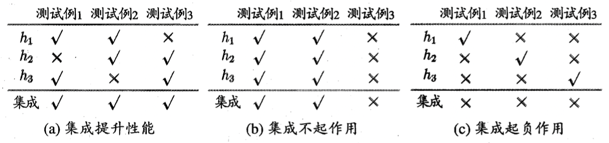
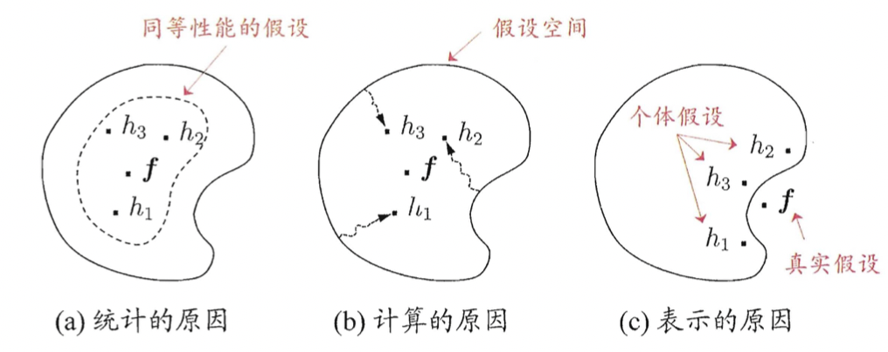

集成学习
集成学习算法
集成学习主要结合多个基学习器，以获得比单一学习器更加优越的泛化性能，也就是俗话所说的三个臭皮匠，顶个诸葛亮，相对比而言，单一学习器就是弱分类器（这并不代表只有弱分类器才有集成需求，其实现在很多分类器都是给予强分类器）。
不过通常而言，当把好的和坏的东西混杂在一起，那么平均结果会介于好与坏之间，而集成学习的目的是为了比最好的还好，所以用于集成学习的基学习器必须好而不同，如下图就表示了不同性能基学习器集成的效果。

那么集成学习的错误率应该是多少呢？
对于二分类问题，假设基分类器是 $h_{i}$ ，基分类器的错误率是 $\epsilon$ ，真实函数是 $f$ ，那么显然
$$P(h_{i}(x) \neq f(x)) = \epsilon$$
若有 $T$ 个分类器，超过 $\frac{T}{2}$ 的分为正样本，则集成为正样本，则
$$H(x) = sign(\sum_{i = 1}^{T}h_{i}(x))$$
假设基分类器的错误是相互独立的，那么集成的每个基分类器就变成了伯努利分布变量
$$P(H(x) \neq f(x)) = \sum_{k = 0}^{\frac{T}{2}}\begin{pmatrix} T \ k \end{pmatrix}(1 - \epsilon)^{k} \epsilon^{T - k} \leq exp(-\frac{T}{2}(1 - 2\epsilon)^{2})$$
证明这个式子需要用到Hoeffding不等式
假设伯努利分布的概率为 $p$ ，n次以后，k次满足的概率为
$$P(H(x) \leq k) = \sum_{i = 0}^{k}\begin{pmatrix} n \ i \end{pmatrix}p^{i}(1- p)^{n - i}$$
对 $\sigma > 0, k = (p - \sigma)n$ 则有Hoeffding不等式
$$P(H(n) \leq (p - \sigma)n) \leq exp(-2\sigma^{2}n)$$
令 $\frac{T}{2} = (p - \sigma)n$ 易证明上式
上面有一个非常重要的假设，基学习器的误差必须相互独立，但是实际应用中，通常是不独立的，在准确性和多样性上总会存在冲突，所以集成学习的核心就是产生并结合“好而不同”的基学习器。
集成学习由于包含了多个学习器，所以即便个体具有很好的可解释性，但是集成后仍然是黑箱模型，难以直接解释，所以也衍生了一些二次学习的方法（如通过集成学习选择特征，然后再构造单模型）
当前主流的集成学习包含两大类
- 基学习器之间存在强依赖关系，需要串行生成的序列化方法，代表为Boosting，主要关注降低偏差
- 基学习器之间不存在依赖关系，可同时生成的并行化方法，代表是Bagging，主要关注降低方差
学习器结合
平均法
- 简单平均法
$$H(x) = \frac{1}{T}\sum_{i = 1}^{T}h_{i}(x)$$
- 加权平均法
$$H(x) = \sum_{i = 1}^{T}w_{i}h_{i}(x)$$
显然，简单平均法就是 $w_{i} = \frac{1}{T}$ 的特例。
简单平均由于涉及数值运算，所以比较适合数值型输出，当个体学习器差异不大的时候，用简单平均法，单差异较大时，使用加权平均法。
投票法
- 绝对多数投票法
当某标记过半时，则预测为该标记，否则拒绝预测。这种拒绝预测的机制，对于可靠性要求较高的学习任务是一个很好的方法，但是当学习任务必须要一个预测结果时，这种方法就不太好。
$$H(x) = \begin{cases}
c_{j}, & \text{if} \sum_{i = 1}^{T}h_{i}^{j}(x) > 0.5\sum_{k = 1}^{N}\sum_{i = 1}^{T}h_{i}^{k}(x)\
\text{reject}, & \text{otherwise}
\end{cases}$$
- 相对多数投票法
预测为得票数最多的标记，当同时多个标记获得最高，则随机选择。
$$H(x) = c_{arg max_{j}\sum_{i = 1}^{T}h_{i}^{j}(x)}$$
- 加权投票法
加权投票就是相对多数投票法更加泛化一种方法
$$H(x) = c_{arg max_{j}\sum_{i = 1}^{T}w_{i}h_{i}^{j}(x)}$$
学习法
当学习器很多时候，还可以使用学习法来进行集成，即训练另一个次级学习器来结合基学习器。最具代表性的为Stacking算法。
Stacking算法先从初始数据集训练初级学习器，然后生成一个新数据集用来训练次级学习器，在这新数据集中，初级学习器的输出被当作样例输入特征，而初始样本的标记仍然作为样例标记。
通常使用多响应线形回归作为次级学习算法。
Boosting
Boosting的训练方法
Boosting是一种串行学习的方法，大概逻辑是先训练一个分类器，然后基于学习器对训练样本进行调整，让先前学错的样本得到更多的关注，然后基于调整后的样本分布来寻来呢下一个基学习器，直至达到设定的基学习器数量，最终对所有的基学习器进行加权结合。
这种通过改变训练样本权重，学习多个分类器的方法，也叫提升方法，Boosting中最具代表性的算是AdaBoost。
基于Boosting的方法，AdaBoost需要解决两个问题：
- 如何在每一轮改变训练数据的权值和概率分布
- 如何将弱分类器组合成强分类器
AdaBoost的解决方法是，对于第一个问题，提高在前一轮中分类错误的分类样本的权值，降低被正确分类的样本的权值，这就像一个很大的数据集被很多分类器分而治之。对于第二个问题，AdaBoost选择采用加权多数表决的方法，对于误差率小的分类器，权值更大，在表决中作用更大，对于误差率大的分类器，权值更小，在表决中作用更小。
AdaBoost算法
权重更新
AdaBoost可以理解为一种加性模型，即集成方法是一基学习器的线形组合，可以表示为
$$H(x) = \sum_{t = 1}^{T}\alpha_{t}h_{t}(x)$$
第一个基分类器 $h_{1}$ 是直接在初始数据上学习基学习算法，然后可以迭代的获得 $\alpha_{t}$ 和 $h_{t}$ 。
为了让该迭代过程可以顺利进行，需要定义一个损失函数（指数损失函数），当 $f(x)$ 和 $H(x)$ 符号相同是，损失很小，反之会很大。
$$loss_{exp}(H|D) = E_{x \backsim D}[e^{-f(x)H(x)}]$$
把 $H(x)$ 带入上式得
$$\begin{align} loss_{exp}(\alpha_{t}h_{t}|D_{t})
& = E_{x \backsim D_{t}}[e^{-f(x)\alpha_{t}h_{t}(x)}] \\
& = E_{x \backsim D_{t}}[e^{-\alpha_{t}} \cdot (f(x) = h_{t}(x)) + e^{\alpha_{t}} \cdot (f(x) \neq h_{t}(x))] \\
& = e^{- \alpha_{t}}P_{x \backsim D_{t}}(f(x) = h_{t}(x)) + e^{\alpha_{t}}P_{x \backsim D_{t}}(f(x) \neq h_{t}(x)) \\
& = e^{-\alpha_{t}}(1 - \epsilon_{t}) + e^{\alpha_{t}}\epsilon_{t}
\end{align}$$
令上式对 $\alpha_{t}$ 的偏导为0则有
$$\alpha_{t} = \frac{1}{2}\ln(\frac{1 - \epsilon_{t}}{\epsilon_{t}})$$
这就是分类器的每次权重更新公式。
概率分布变化
AdaBoost是希望在 $H_{t - 1}$ 之后的 $h_{t}$ 能纠正 $H_{t - 1}$ 的错误，可以写成最小化如下目标函数
$$loss_{exp}(H_{t - 1} + h_{t}|D) = E_{x \backsim D}[e^{-f(x)(H_{t - 1}(x) + h_{t}(x)}]$$
理想的基学习器
$$\begin{align} \ h_{t}(x)
& = arg min_{h} loss_{exp}(H_{t - 1} + h | D) \\
& = arg max_{h} E_{x \backsim D}[\frac{e^{-f(x)H_{t - 1}(x)}}{E_{x \backsim D}[e^{-f(x)H_{t - 1}(x)}]}f(x)h(x)] \\
& = arg min_{h} E_{x \backsim D_{t}}[\cdot (f(x) \neq h(x)]
\end{align}$$
即，理想的 $h_{t}$ 是在分布 $D_{t}$ 下最小化分类误差，于是
$$D_{t + 1}(x) = \frac{D(x)e^{-f(x)H_{t}(x)}}{E_{x \backsim D}[e^{-f(x)H_{t}(x)}]}$$
这就得到了样本分布的更新公式
Boosting学习
前面有说Boosting集成的方法是串联基学习器，让每个学习器都好而不同，这里的不同为对特定的样本分布进行学习，如何获得不同的样本有两种方法，分别是
- 重赋权法：训练的每一轮根据样本分布为每个训练样本重新赋予一个权重
- 重采样法：训练的每一轮根据样本分布对训练集重新采样进行学习
为了保证每次学习都是好的，Boosting算法在训练的时候每一轮都需要检查当前的基学习器是否满足基本条件（也就是说当前分类器是否比随机猜测的效果好 $\epsilon < 0.5$ ），如果不满足，则抛弃当前基学习器。对于重赋权法可能会出现基学习器不足T的情况，最后集成的基学习器远远不足设定的T，若采用重采样法则可获得重启动以避免早停。
Bagging
Bagging学习方法
相比Boosting，Bagging的逻辑会简单一些，它没有复杂的权重更新和分布变化。Bagging基于自助采样法获取每次都训练样本，如对于一个含有 M 数量都样本，每次都有放回的采样 m 和样本进行训练，经过 T 次采样后，可以获得 T 个基训练器，再将这些基训练器进行结合。
结合的时候，对于分类问题，Bagging采用少数服从多数的简单投票法，如果两个类的票数相同时，则随机选择一个。对于回归问题，则采用简单平均的方法。
这种简单投票和简单平均的方法，让整个集成模型的计算复杂度可以同阶等于训练一个单分类器的计算复杂度，因为集成模型的计算复杂度为（ $T(O(m) + O(s))$，前者是基学习器的复杂度，后者是投票或平均的复杂度，后者 T 相对样本而言会小很多）。
而且，自助采样还有一个优点，每次基学习器的样本只使用了63.2%（有放回抽样的会再次被抽到的概率）的初始训练集样本，剩下的36.8%的样本可用作验证集来提高模型的泛化性能，这种泛化能力非常有用，比如对于决策树基模型，可以用来剪枝，对于神经网络基模型，可以用来辅助早停。从偏差和误差的角度看，Bagging也更加关注方差，在有样本扰动的情况下集成的模型也更加稳定。
随机森林
随机森林（Random Forest， RF）是以决策树为基构建的Bagging集成，同时在此基础上引入了随机属性的选择。即使用自助采样去获得样本，同时使用随机采样去获得属性。
决策树的属性划分是在所有属性集合中去选择一个最优属性（选择方法有信息增益、信息增益率、基尼系数等，详细选择方法可参考 决策树原理解析 ）。而在RF中，先在属性集合中随机选择一个子集，然后从这个子集中选择最优属性，推荐的子集数量为2的对数（$k = \log_{2}d$）。
由于除了样本选择，RF还引入了属性选择，所以与一般Bagging相比，RF在训练开始时，性能稍差，毕竟单个子集属性构成的决策树性能会较低，但是随着基学习器数量的增加，RF的泛化误差会比一般的Bagging更低。
集成学习的多样性
误差-分歧分解
前面花很大篇幅说来集成学习“好而不同”中的“好”，下面从数学的角度看“不同”对分类误差的影响。
对于单个分类器，其分歧可以表示为
$$A(h_{i}|x) = (h_{i}(x) - H(x))^{2}$$
集成的分歧可以表示为
$$\bar{A}(h_{i}|x) = \sum_{i = 1}^{T}w_{i}A(h_{i}|x) = \sum_{i = 1}^{T}w_{i}(h_{i}(x) - H(x))^{2}$$
这里的分歧表示了学习器在样本 $x$ 上的不一致性，一定程度上可以表示多样性。
个体学习器 $h_{i}$ 和集成 $H$ 的平方误差可以表示为
$$E(h_{i}|x) = (f(x) - h_{i}(x))^{2}$$
$$E(H|x) = (f(x) - H(x))^{2}$$
那
$$\bar{A}(h_{i}|x) = \sum_{i = 1}^{T}w_{i}E(h_{i}|x) - E(H|x) = \bar{E}(h_{i}|x) - E(H|x)$$
所以
$$E(H|x) = \bar{E}(h_{i}|x) - \bar{A}(h_{i}|x)$$
也就说最后 $H$ 的误差受到 $h_{i}$ 的误差和集成的分歧的影响，个体学习器误差越小，分歧越大，则最后的误差越小。
多样性度量
典型的多样性度量方法是比较两两相似/不相似，常用的方法有，对于如下分布（a + b + c + d = m）
| 预测列联表 | $h_{i} = +1$ | $h_{i} = -1$ |
|---|---|---|
| $h_{j} = +1$ | a | c |
| $h_{j} = -1$ | b | d |
- 不合度量
$$dis_{ij} = \frac{b + c}{m}$$
- 相关系数
$$p_{ij} = \frac{ad - bc}{\sqrt{(a + b)(a + c)(c + d)(b + d)}}$$
- Q-统计量
$$Q_{ij} = \frac{ad - bc}{ad + bc}$$
- k- 统计量
$$p_{1} = \frac{a + d}{m}$$
$$p_{2} = \frac{(a + b)(a + c) + (c + d)(b + d)}{m^{2}}$$
$p_{1}$ 为两个分类器取得一致的概率，$p_{2}$ 为两个分类器偶然达成一致的概率。
$$k = \frac{p_{1} + p_{2}}{1 - p_{2}}$$
若 $h_{i}$ 和 $h_{j}$ 完全一致，则 $k = 1$，如果仅是偶然一致，$k = 0$。
多样性增强
增强多样性，一般的思路是对输入样本、输入属性、输出表示和算法参数进行扰动。
前面所说的AdaBoost对样本权重的变化就属于数据样本扰动，RF对样本的不放回抽样和属性的随机选择就分别数据样本扰动和属性扰动。
输出扰动即对输出标记作变动，如随机改变一些样本的标记，或将分类输出转化为回归输出等。
算法扰动比如在神经网络中，初始权值、droupout、正则等都属于这一大类。
集成学习的优点
集成学习至少有三个优点
- 统计学角度：多学习器可以获得一个相对稳定的假设空间，以减少泛化误差
- 计算角度：集成可降低陷入局部最优的可能性
- 表示角度：多学习器可以让假设空间有所扩大，有可能学到更好的近似
如下图所示

reference
统计学习方法，李航，-第2版，–清华大学出版社，2019
机器学习，周志华，-第1版，–清华大学出版社，2016
完～